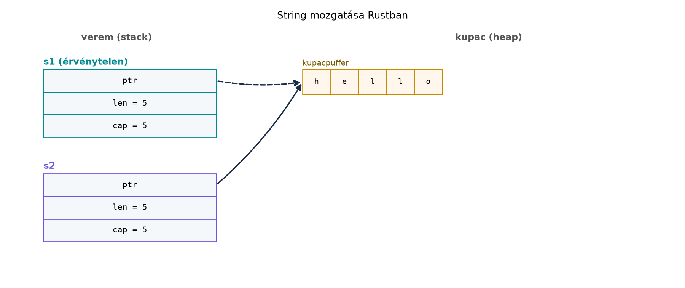

Egy évtizedes C++-fejlesztőként pontosan ismeri azokat a hibákat,
amelyek a leghosszabb éjszakákat okozzák: a lógó referenciát, amely egy
lefutott függvény lokális változójára mutat; az iterátort, amelyet egy
push_back hívás érvénytelenít; a két szálat, amelyek
egyszerre ír egy megosztott egész változót. Ezek a hibák C++-ban
többnyire lefordulnak, és csak futás közben – gyakran hetekkel később,
éles környezetben – jelentkeznek. A Rust legfontosabb ígérete, hogy az
ilyen hibaosztályokat a biztonságos részen már fordítási időben kizárja,
méghozzá úgy, hogy a futási teljesítményt nem áldozza fel.
A C++ a teljesítményért cserébe a programozóra bízza a memóriabiztonságot. A következő hibaosztályok mind nem definiált viselkedéshez (undefined behavior, UB) vagy logikai hibához vezethetnek, és a C++ fordító általában nem állítja meg őket:
nullptr-t
derreferálunk.A Rust ezeket nem futás közben ellenőrzi, hanem a nyelvi szabályaival
és a fordítási idejű elemzéssel (ownership, borrowing,
Send/Sync) kizárja. A hibaosztály-lista tehát
nem csupán elmélet: a későbbi alfejezetekben mindegyikre konkrét nyelvi
mechanizmust építünk.
A Rust három alappillére adja a biztonságot:
&T), vagy írhatók (kizárólagos,
&mut T), de egyszerre nem lehet több író vagy egy író
és olvasó. Ez zárja ki az iterator-invalidálást és a buffer overflow
nagy részét.Send és Sync: az előbbi
azt jelöli, hogy egy érték átvihető egy másik szálra, az utóbbi azt,
hogy egy referencia megosztható szálak között. A data race így fordítási
időben kiszűrhető, mert a nem szálbiztos típusok nem léphetnek át
szálhatáron.Ezeket a fogalmakat itt még csak előzetesen vezetjük be; a részletes szabályokat a Ownership: minden értéknek egy tulajdonosa van, a Referenciák és a kölcsönzési szabály: sok olvasó XOR egy író és a Szálak, Send és Sync: data race fordítási időben kizárva alfejezetek fejtik ki.
Definíció. A biztonságos Rust (safe Rust) a nyelv azon része, amelyben a fordító statikus elemzése garantálja a memóriabiztonságot és az adatverseny-mentességet; itt nem léphet fel nem definiált viselkedés.
Definíció. A nem definiált viselkedés (undefined behavior, UB) olyan nyelvi szabálysértés, amelynek a szabvány nem ír elő semmilyen viselkedést; a program bármit tehet, akár „működik”, akár lefagy, akár biztonsági rést nyit.
Szabály. A biztonságos Rust kódban nem fordulhat elő nem definiált viselkedés. Ha egy program lefordul safe módban, a fenti hibaosztályok (use-after-free, double-free, data race, stb.) nem léphetnek fel.
Szabály. A Rust a veszélyes műveleteket az
unsafe blokkokra korlátozza. Az unsafe kódban
a fejlesztő felel a memóriabiztonsági invariánsok betartásáért, a safe
kóddal való interfésznek pedig biztonságosnak kell lennie.
Nézzük a lógó referencia klasszikus C++ példáját:
#include <string>
#include <iostream>
std::string& dangling() {
std::string s = "hello";
return s; // UB: referencia a lefutott függvény lokális változójára
}
int main() {
std::string& r = dangling();
std::cout << r << '\n'; // olvashatatlan memória
}Ez a kód C++-ban lefordul (a fordító legfeljebb figyelmeztet), futás közben viszont UB-t okoz. A Rust megfelelője nem fordul le:
fn dangling() -> &String {
let s = String::from("hello");
&s // visszaadunk egy referenciát a lokális változóra
}
fn main() {
let r = dangling();
println!("{r}");
}Ez a változat szándékosan nem fordul le:
error[E0515]: cannot return reference to local variable `s`
--> src/main.rs:4:5
|
4 | &s
| ^^ returns a reference to data owned by the current functionA különbség lényege: a Rust borrow checker ismeri az élettartamokat,
és tudja, hogy az s változó a függvény végén felszabadul. A
visszaadott referencia így érvénytelen lenne, ezért a kód már fordítási
időben hibát ad, nem pedig futás közben.
Az iterator-invalidálás is hasonló. C++:
#include <vector>
#include <iostream>
int main() {
std::vector<int> v = {1, 2, 3};
int& first = v[0];
v.push_back(4); // reallokálhat, first érvénytelen
std::cout << first << '\n'; // UB
}Rust:
fn main() {
let mut v = vec![1, 2, 3];
let first = &v[0];
v.push(4); // megpróbálunk mutable kölcsönzést, miközben `first` él
println!("{first}");
}Ez a változat szándékosan nem fordul le:
error[E0502]: cannot borrow `v` as mutable because it is also borrowed as immutable
--> src/main.rs:3:5
|
2 | let first = &v[0];
| - immutable borrow occurs here
3 | v.push(4);
| ^^^^^^^^^ mutable borrow occurs here
4 | println!("{first}");
| ------- immutable borrow later used hereA kölcsönzési szabály (sok olvasó XOR egy író) tehát nemcsak a szálak közötti, hanem az egyszálú, moduláris kódban is kizárja az érvénytelen referenciákat.
A C++ 11 óta a mozgatási szemantika lehetővé teszi, hogy egy objektum erőforrásait átadjuk egy másik objektumnak. A moved-from objektum azonban C++-ban érvényes, de nem specifikált állapotú marad. Gyakori csapda, hogy a fejlesztő mégis használja, feltételezve az eredeti értéket:
#include <string>
#include <iostream>
int main() {
std::string s1 = "hello";
std::string s2 = std::move(s1);
std::cout << s1 << '\n'; // nem UB, de s1 tartalma nem specifikált (lehet üres, lehet "hello")
}A Rust a mozgatást destruktív mozgatásként kezeli: a forrás változó a mozgatás után érvénytelenné válik, és a használata fordítási hibát okoz. Ez a kód szándékosan nem fordul le:
fn main() {
let s1 = String::from("hello");
let s2 = s1; // s1 mozgatva, innentől érvénytelen
println!("{s1}"); // fordítási hiba: use of moved value
}Hibaüzenet:
error[E0382]: borrow of moved value: `s1`
--> src/main.rs:4:15
|
2 | let s1 = String::from("hello");
| -- move occurs because `s1` has type `String`,
| which does not implement the `Copy` trait
3 | let s2 = s1;
| -- value moved here
4 | println!("{s1}");
| ^^^^ value borrowed here after moveA javítás attól függ, mit akarunk. Ha az eredeti értékre már nincs
szükségünk, használjuk az s2-t:
fn main() {
let s1 = String::from("hello");
let s2 = s1;
println!("{s2}"); // "hello"
}Ha viszont mindkét változót használni akarjuk, másolni kell:
fn main() {
let s1 = String::from("hello");
let s2 = s1.clone();
println!("{s1} és {s2}"); // "hello és hello"
}A mozgatás utáni állapotot a következő ábra szemlélteti. A
String a veremben egy mutatót, hosszt és kapacitást tárol;
a tényleges karakterek a kupacban vannak. Mozgatáskor a mutató átkerül
az új tulajdonoshoz, a régi s1 pedig érvénytelenné
válik.

A mozgatás tehát nem másolja a kupacadatot, csak a veremben lévő struktúrát másolja, és a régi példányt érvényteleníti. Ez a destruktív mozgatás a Rust egyik kulcsfontosságú eltérése a C++-tól.
A C++ és a Rust is büszke a zero-cost absztrakcióra: ha nem használsz egy absztrakciót, nem fizetsz érte; ha használod, nem tudnád kézzel gyorsabban megírni. A Rust generikusai – a C++ sablonokhoz hasonlóan – monomorfizálódnak, azaz a fordító minden konkrét típusra külön kódot generál. A trait-objektumok pedig a virtuális függvényekhez hasonló dinamikus diszpécset adnak, de erről később lesz szó.
A biztonsági ellenőrzések azonban némi futási költséggel járhatnak. A leggyakoribb példa a határellenőrzés:
let v = vec![1, 2, 3];
let x = v[5]; // panic: index out of boundsA C++-ban v[5] UB, futás közben bármit okozhat. A Rust
biztonságos kódban panikol, ami nem UB, de futási költség és
hibalehetőség. A gyakorlatban a Rust fordító sok esetben ki tudja
optimalizálni a határellenőrzést, ha a határokat statikusan ismeri, vagy
ha egy iterátorral eleve nem léphetünk túl. Ahol mégis megmarad, ott a
biztonságért fizetünk.
Ugyanakkor a Rust az aliasing-információból profitál is: a
&mut T kizárólagos kölcsönzés garantálja, hogy a
hivatkozott memóriaterületre nincs más mutató. Ez lehetővé teszi az
agresszívabb optimalizációt, például a memória gyorsítótárazását vagy a
vektorizálást. C++-ban a restrict kulcsszó hasonló célt
szolgál, de nem része a szabványnak.
A Rust alapértelmezett módja a safe Rust. Ebben a
módban a fordító megakadályozza a memóriabiztonsági hibákat és a data
race-t. Vannak azonban olyan alacsony szintű műveletek, amelyeket a
fordító nem tud biztonságosnak bizonyítani: nyers mutatók dereferálása,
static mut változók módosítása, nem biztonságos függvények
hívása. Ezeket az unsafe blokkban lehet elvégezni:
fn main() {
let mut x = 10;
let ptr = &mut x as *mut i32;
// SAFETY: a ptr érvényes, és nem aliasingolódik.
unsafe {
*ptr = 20;
}
println!("{x}");
}Az unsafe kulcsszó nem teszi „rosszá” a kódot; csak azt
jelzi, hogy a fejlesztő felel a további invariánsokért. A Rust
ökoszisztéma filozófiája, hogy az unsafe kódot biztonságos
absztrakció mögé rejtjük, így a felhasználó továbbra is safe kódot
írhat. Erről részletesen a Unsafe Rust:
szuperképességek és felelősség alfejezetben lesz szó.
A nem definiált viselkedés (UB) fogalma mindkét nyelvben ismert, de a
Rustban a UB kizárólag az unsafe blokkban fordulhat elő. A
safe kódban a legrosszabb, ami történhet, a panic: a program
kontrolláltan leáll, vagy a hívó elkaphatja a hibát. Ez fontos garancia,
mert a UB C++-ban gyakran csendes memóriakorrupciót okoz, amit nehéz
reprodukálni.
A Rust nyelv nem csak szintaxisból áll: a Cargo a
hivatalos build rendszer és csomagkezelő, a crates.io
pedig a csomagregiszter. A C++-ban a CMake, a vcpkg, a Conan stb. külön
eszközök; Rustban minden egy helyen van. A Cargo.toml
deklarálja a függőségeket, a cargo build letölti és
lefordítja őket, a cargo test futtatja a teszteket. A
fejezet későbbi alfejezeteiben minden labor ezt használja.
A Rust edition-ök (2015, 2018, 2021, 2024) a nyelv
„nagyverziói”; segítenek a kompatibilitási ígéret betartásában, miközben
lehetővé teszik a nyelvi evolúciót. A régebbi editionök kódjai továbbra
is lefordulnak, és keverhetők egy workspace-en belül. A stabil API-kra a
Rust nem tör, a std könyvtár csak bővül; ez a stabilitási
ígéret a vállalati használat egyik alappillére.
Továbbvitt eredmény. Ez az alfejezet rögzíti a
hibaosztályok listáját, amelyre a későbbi fejezetek visszautalnak: az
ownership (Ownership: minden értéknek egy
tulajdonosa van) a use-after-free és a double-free ellen, a
borrowing (Referenciák és a kölcsönzési szabály: sok
olvasó XOR egy író) az iterator-invalidálás és az aliasing ellen, a
Send/Sync (Szálak, Send és
Sync: data race fordítási időben kizárva) a data race ellen, az
Option (Az enum mint összeg-típus és az
Option a null helyett) a null pointer ellen, a slice-ok (Slice-ok, String és &str, UTF-8) pedig a buffer
overflow ellen. Ezt a listát a Összefoglalás:
C++→Rust fordítási kézikönyv és továbbtanulás alfejezet is
hivatkozni fogja.
A borrow checker „legyőzése” klónozással. Amikor
a C++-fejlesztő a kölcsönzési hibákat .clone()-nal oldja
meg, valójában elkerüli a problémát, de felesleges másolással rontja a
teljesítményt. Ilyenkor inkább a referencia-élettartamok átszervezésére
vagy a típus kialakítására kell gondolni.
Az unsafe használata a biztonsági ellenőrzés
megkerülésére. A C++-ból jövő fejlesztő hajlamos lehet
unsafe blokkba csomagolni mindent, hogy „megszokott” nyers
mutatókkal dolgozzon. Ez aláássa a Rust biztonsági ígéretét; a valódi
cél az, hogy az unsafe-et minimális, jól dokumentált
absztrakciókra korlátozzuk.
A moved-from objektum használata. C++-ban a moved-from objektum érvényes (ha nem specifikált), Rustban a mozgatás után a forrás érvénytelen. Ez a szokás gyakran E0382 hibát okoz, amíg meg nem szokjuk a destruktív mozgatást.
(a) Fogalmi kérdés. Sorolja fel legalább öt
C++-hibaosztályt, és rendelje hozzá a Rust biztonsági mechanizmusát
(ownership, borrowing, Send/Sync,
Option, slice-határellenőrzés). Melyik hibaosztályt zárja
ki az Option?
(b) C++-kód átírása. Az alábbi C++ kód lógó referenciát okoz. Írja át idiomatikus Rustra úgy, hogy ne legyen lógó referencia, és a program kinyomtassa az értéket.
#include <string>
#include <iostream>
std::string& dangling() {
std::string s = "hello";
return s;
}
int main() {
std::string& r = dangling();
std::cout << r << '\n';
}(c) Implementációs feladat. Hozzon létre egy új Rust
projektet cargo new move_demo paranccsal, és írja be a
use-after-move hibás kódot
(let s2 = s1; println!("{s1}");). Ellenőrizze a hibakódot
(E0382), majd javítsa a kódot úgy, hogy leforduljon és a várt kimenetet
adja. Dokumentálja, miért nem szabad a mozgatás után a forrást
használni.
(d) Tervezési döntés. Adott a következő C++ data
race példa: két szál növel egy közös int-et szinkronizáció
nélkül. Válasszon Rust megoldást a probléma biztonságos kiküszöbölésére
(például Arc<Mutex<i32>>, atomi típus vagy
csatorna), indokolja a választást, és írjon egy lefordítható Rust
vázlatot. Ez a feladat előkészíti a Szálak, Send és
Sync: data race fordítási időben kizárva alfejezetet.
(a) A hibaosztályok és mechanizmusok: -
use-after-free → ownership (automatikus felszabadítás a tulajdonos
hatókörének végén) - double-free → ownership (a felszabadítás
kizárólagos felelőssége) - lógó referencia → borrowing
(élettartam-ellenőrzés) - iterator-invalidálás → borrowing (sok olvasó
XOR egy író) - data race → Send/Sync (nem
szálbiztos típus nem léphet át szálhatáron) - null pointer dereference →
Option (nincs null referencia) - buffer overflow → slice-ok
és határellenőrzés (panikolás a UB helyett)
Az Option a null pointer dereference-t zárja ki, mert a
hiányzó értéket explicit None jelzi, és a
match vagy if let kezelésre kényszerít.
(b) A javított Rust kód visszaadja a
String-et, nem referenciát:
fn dangling() -> String {
let s = String::from("hello");
s
}
fn main() {
let r = dangling();
println!("{r}");
}A String tulajdonjoga átkerül a hívóhoz, így nincs
érvénytelen referencia.
(c) A lépések:
cargo new move_demo
cd move_demoA src/main.rs hibás tartalma:
fn main() {
let s1 = String::from("hello");
let s2 = s1;
println!("{s1}"); // E0382: borrow of moved value
}A cargo run hibát ad a fenti E0382 hibakóddal. A
javítás:
fn main() {
let s1 = String::from("hello");
let s2 = s1;
println!("{s2}");
}Várt kimenet: hello. A mozgatás után a forrás
érvénytelen, mert a Rust a duplikált felszabadítás elkerülése érdekében
a tulajdonjogot átadja; a forrás használata UB-t (double free)
okozhatna, ezért a fordító tiltja.
(d) Egy biztonságos megoldás
Arc<Mutex<i32>>-szel:
use std::sync::{Arc, Mutex};
use std::thread;
fn main() {
let counter = Arc::new(Mutex::new(0));
let mut handles = vec![];
for _ in 0..2 {
let counter = Arc::clone(&counter);
let handle = thread::spawn(move || {
let mut num = counter.lock().unwrap();
*num += 1;
});
handles.push(handle);
}
for handle in handles {
handle.join().unwrap();
}
println!("{}", *counter.lock().unwrap());
}Az Arc biztosítja a megosztott tulajdonlást, a
Mutex a kölcsönös kizárást. A counter típusa
Arc<Mutex<i32>>, amely Send és
Sync, így a closure átvihető a szálakra, és a data race
kizárt.
Ez az alfejezet bemutatta azokat a C++-hibaosztályokat, amelyeket a
biztonságos Rust fordítási időben kizár: use-after-free, double-free,
lógó referencia, iterator-invalidálás, data race, null pointer
dereference és buffer overflow. A nyelv ezt az ownership, a borrowing,
valamint a Send/Sync rendszerével éri el; a
safe Rustban nincs nem definiált viselkedés, csak panik. A mozgatás
destruktív, a moved-from változó használata E0382 fordítási hibát ad. A
zero-cost absztrakció mindkét nyelvben érvényes, de a Rust
határellenőrzése futási költséggel járhat, míg az aliasing-információból
optimalizációs előnyt nyer. Az unsafe blokkokra korlátozott
UB a fejlesztő felelőssége. A Cargo, a crates.io és az editionök adják
az ökoszisztéma stabilitását. Továbbvitt eredmény: a
hibaosztály-lista, amelyre az Ownership: minden
értéknek egy tulajdonosa van, Referenciák és a
kölcsönzési szabály: sok olvasó XOR egy író, Szálak, Send és Sync: data race fordítási időben
kizárva és más alfejezetek visszautalnak.
A fejezet a stabil nyelvi szabályokra épül, különösen a Rust Reference és a Rust Book memóriabiztonsági fejezeteire. A felsorolt forráskiindulópontok (rust-lang.github.io/rustup, doc.rust-lang.org/cargo, doc.rust-lang.org/book, doc.rust-lang.org/clippy, doc.rust-lang.org/edition-guide) kiindulópontok; a konkrét stabilizálási állapotokat, crate-verziókat és a 2024-es edition részleteit a hivatalos kiadási jegyzetekben ellenőrizni kell. A hibakódok (E0382, E0502, E0515, E0277) stabilak, de a pontos hibaüzenetek verziófüggőek.